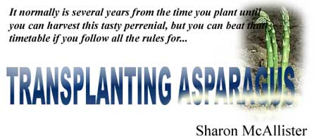

LEFT: An asparagus seedling will produce only leaves. It may come up in an established bed ... or in the most unpredictable places! RIGHT. A yearling plant may develop a tiny spear, but it quickly opens and-at that point is no longer worth harvesting.